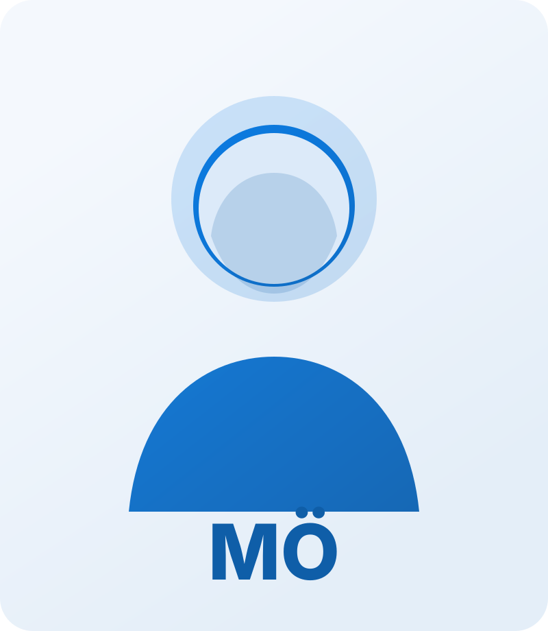

Assistant Professor
Department of Electronic Systems, Aalborg University, Copenhagen, Denmark
Researcher, KTH Royal Institute of Technology, Stockholm, Sweden
I am an Assistant Professor at Aalborg University and a Researcher at KTH Royal Institute of Technology. My work focuses on machine learning for engineering systems, information-theoretic learning, wireless communications, AI-native network management, non-terrestrial networks, uncertainty-aware inference, localisation, and engineering decision support.
More broadly, I work on future telecommunication systems and machine learning for engineering, with research spanning wireless and networked systems, 5G/6G and non-terrestrial networks, mobility management, system-level optimisation, and dependable learning-based control for resource-constrained environments.